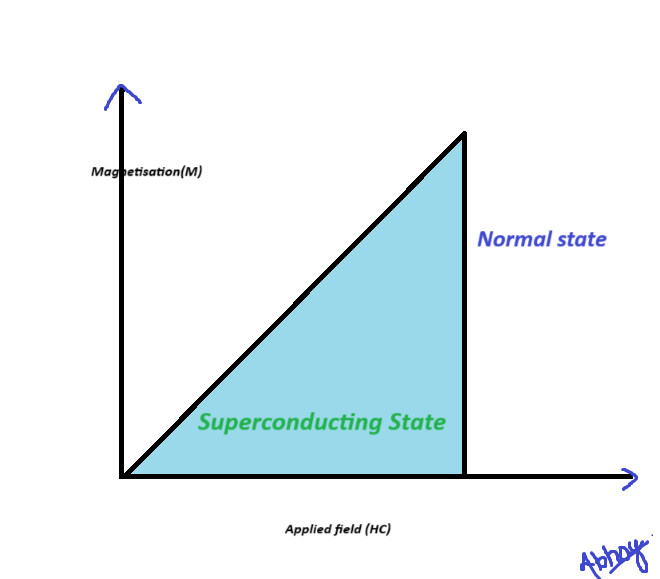
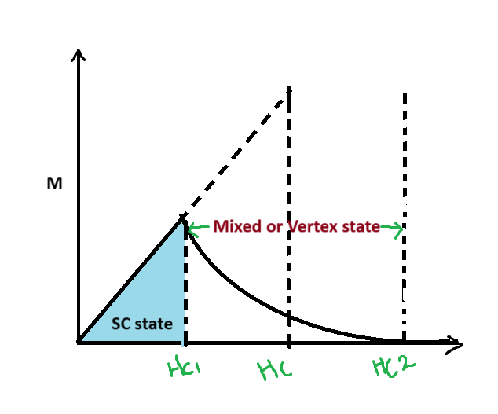

UNIT 5: Superconductors and Nano-Materials
Superconductors
Super Conductivity
The Sudden disappearence in the electrical resistance of a material at or below certain temrature is called SuperConductivity.
The material which exhibits this property is called Super Conductor.
Ex:Murcury,Lead and Tin
Critical Temprature or Transition Temprature(Tc)
It is a temprature at which transition from normal to super conducting state and resistivity of material suddenly drop.
Temprature Dependence of electrical resistivity of super Conductors
When normal conductors cooled down their electrical resistivity decreases as a fucntion of temprature because at lower temprature atomic vibration are less and conduction electrons move. however, at the absolute temprature(t=o) the resistivity is NOT 0(zero).Hence this is non-zero value of electrical resistivity at T=0 is called Residual.
On other hand, When superconductors cooled down their electrical resistivity decreases in the same way as normal conductors and suddenly drops to zero at a certain temprature called Critical Tempratureor Transition Tempratureand material passes into the superconducting state from normal state.
Temprature Dependence of Critical Temprature(Tc)
If superconducting material placed in external magnetic field , its superconducting state decided by the critical magnetic field(Hc) and critical temprature(Tc) For Each and Every temprature their Critical Temp(Tc) exsist a critical field which could distroy superconducting state of material.
The minimum value applied magnetic field at which material looses its superconductivity is
called Critical Field(Hc).

Critical Current (Ic) / Critical Current Density(Jc) / Persistant Current
Critical Current (Ic)
It is a Maximun current which can flow through the superconducting wire without lossing it's conductivity.
Critical Current Density(Jc)
Critial current Per unit area.

Persistant Current
Meissner Effect
The Phenomenon of exclusion of magnetic Field lines of foreces from the intier bulk of supercondictor when they are cooled below crtitical temprature(Tc) in an External Magnetic Field called Meissner Effect.

The material shows Magnetic effect in its superconducting state only.
When superconductor placed in external magnetic field and cooled below Tc , Magnetic flux id pushed out. Hence, Magnetic Induction is zero inside the material.
If M is intensity of magnetization field in external field H, then using relation:
B=μ0(H+M)
As B=0 inside the material, then M=-H
M/H=-1 ,Magnetic Succesptibility
It shows that superconductors in its superconductong state are perfect diamagnetic materials.
Types of Superconductor
Type 1 Superconductor
The supercondictor which exhibits complete Meissner effect or which never allows Magnetic Flux density inside super conductors in superconducting state are Type 1or Soft Superconductor.
Ex:Tin,Lead and Alemunium.
In given fig. transition from Superconducting state to normal state occurs shaeply at critical field Hc. Upto Hc Magnetisation Increases Linealy with external field H and material is perfectly Diamagnetic. Hence, Shows Compelte Meissner Effect. At Hc Magnetisation drops zero and Material passes into normal state.
Properties Of TYPE 1
Type 2 Superconductor
"The Superconductors in which material looses its magnetisation gradually rather than suddenly" are Termends or Type 2/ Hard SC.They Don't shows meissner's effect.
Ex: Transition Metals & allows containing Molybdneium,Silicon and Vanadium.
- The lower critical field (Hc1) marks the point where the magnetic field starts penetrating.
- Between Hc1 and Hc2, magnetization reduces gradually due to a complicated mixed structure where vortices form.
- Above Hc2, superconductivity is lost, and magnetization vanishes completely.
Properties of TYPE 2 SC
- Higher Critical Temperature (Tc): Typically above 10 K, some even exceeding 100 K.
- Partial Magnetic Field Penetration: Forms a vortex state instead of complete field expulsion.
- Gradual Transition: Resistance decreases gradually instead of a sharp drop.
- Hard Superconductors: Can sustain strong magnetic fields without losing superconductivity.
- High Critical Magnetic Fields: Defined by two critical fields (Hc1 and Hc2).
- Used in Advanced Applications: Found in MRI machines, particle accelerators, and power grids.
- Composed of Alloys and Complex Materials: Includes materials like niobium-titanium (NbTi) and YBCO.
Properties of Superconductor
Superconductors exhibit unique properties when cooled below a critical temperature (Tc). These properties make them highly useful in various applications.
Key Properties:
- Zero Electrical Resistance: Superconductors allow electric current to flow without any resistance, leading to zero power loss.
- Meissner Effect (Perfect Diamagnetism): Expels external magnetic fields, making superconductors perfect diamagnets.
- Critical Temperature (Tc): The temperature below which a material becomes superconducting.
- Critical Magnetic Field (Hc): The maximum magnetic field a superconductor can withstand before losing superconductivity.
- London Penetration Depth: Describes how far a magnetic field can penetrate into a superconductor.
- Cooper Pairs: Electrons pair up to form Cooper pairs, allowing smooth flow of current.
- Josephson Effect: Superconductors allow tunneling of Cooper pairs across an insulating barrier, leading to applications in quantum computing.
- Energy Gap: A minimum energy is required to break Cooper pairs, contributing to stability.
London Penetraton Depth
The London Penetration Depth (λ) is the distance inside a superconductor where an external magnetic field decays exponentially(1/e) times of field at the surafce. It is given by:
Formula: λ = √(m / (μ₀ n e²))
- Symbol: λ (lambda)
- Represents: The depth to which the magnetic field can penetrate inside a superconductor.
- Exponential Decay: Magnetic field decreases as B(x) = B₀ e^(-x/λ).
- Depends on: Electron mass (m), charge (e), number density (n), and permeability (μ₀).
- Shorter λ: Indicates stronger superconducting properties.
- Type 1 vs. Type 2: Type 1 superconductors have shorter λ, while Type 2 superconductors have longer λ.
HTSC (High temp Superconductors)
High-Temperature Superconductors (HTSC) are materials that exhibit superconductivity at relatively high temperatures, typically above 77 K (liquid nitrogen temperature). They are mainly ceramic compounds containing copper-oxide (cuprates).
Properties of HTSC:
- High Critical Temperature (Tc): Superconductivity occurs at temperatures above 77 K, some even exceeding 130 K.
- Ceramic Nature: Unlike traditional superconductors, HTSC materials are brittle and non-metallic.
- Layered Structure: Consists of alternating layers of copper-oxide (CuO₂) planes and other elements.
- Type 2 Superconductors: Exhibits a mixed state (vortex state) allowing partial magnetic field penetration.
- Large London Penetration Depth: Due to low electron density, the magnetic field penetrates deeper.
- Application in Power Grids: Used in superconducting power cables, fault current limiters, and maglev trains.
- Common Materials: Examples include YBCO (Yttrium Barium Copper Oxide) and BSCCO (Bismuth Strontium Calcium Copper Oxide).
Applications Of Superconductors
Superconductors have a wide range of applications due to their ability to conduct electricity without resistance. Below are some key applications:
Major Applications:
- Magnetic Levitation (Maglev Trains): Superconducting magnets create frictionless, high-speed trains.
- Medical Imaging (MRI & NMR): Used in Magnetic Resonance Imaging (MRI) and Nuclear Magnetic Resonance (NMR) machines for detailed imaging.
- Particle Accelerators: Superconducting magnets guide and accelerate particles in facilities like the Large Hadron Collider (LHC).
- Power Grids: Superconducting cables and transformers reduce energy loss in electrical grids.
- Quantum Computing: Superconducting circuits are used to build quantum computers for ultra-fast computing.
- Superconducting Sensors (SQUIDs): Highly sensitive devices used for detecting extremely weak magnetic fields.
- Fusion Reactors: Used in Tokamak reactors for generating powerful magnetic fields to contain plasma.
- Military & Defense: Superconductors enhance radar, communication systems, and electromagnetic weapons.